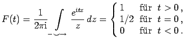
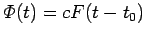

Inhalt Index DeskTop Bronstein

 Funktionentheorie Berechnung reeller Integrale durch Integration im Komplexen Anwendungen des Lemmas von Jordan Beispiele zum Lemma von Jordan
Funktionentheorie Berechnung reeller Integrale durch Integration im Komplexen Anwendungen des Lemmas von Jordan Beispiele zum Lemma von Jordan


Unstetige reelle Funktionen kann man mit Hilfe komplexer Integrale, sogenannter Hakenintegrale nach der Form des Integrationsweges darstellen. Die folgende spezielle Sprungfunktion ist ein Beispiel.
|  | (14.60) |
Deutet man t als Zeit, dann stellt die Funktion  eine Größe dar, die zur Zeit t=t0 von 0 über den Wert c/2 auf den Wert c springt.
Die Sprungfunktion wird in der Elektrotechnik zur Darstellung plötzlich auftretender Strom- oder Spannungsstöße verwendet (s. auch Sprungfunktion).